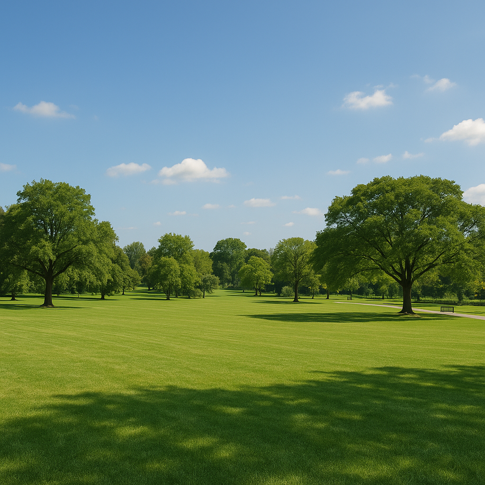
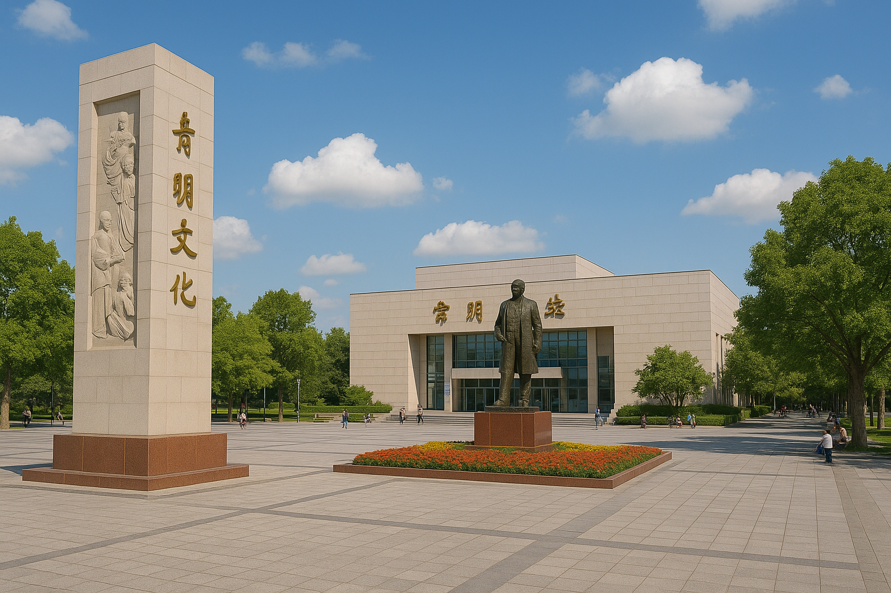
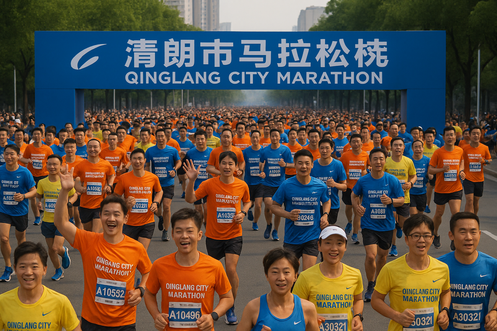

晴朗市信息框
| 国家 | 华东沿海某省 |
| 行政级别 | 副省级市 |
| 面积 | 约 1,780 km² |
| 人口 | 约 520 万 |
| 著名景点 | 青青草原、青岚湾、晴朗塔 |
| 城市口号 | 阳光之都 · 健康之城 |
| 代表色 | 晴空蓝 #3BA9FF |
一、总体概况
晴朗市位于华东沿海地区，濒临青岚湾，西接低丘缓坡地带，东临大海，是一座兼具现代化与自然景观的副省级沿海城市。地理坐标约为北纬30°—31°、东经121°—122°，属亚热带季风气候区，气候温暖湿润、四季分明。
全市下辖7个行政区（含2个郊区与1个新区），常住人口约520万人。
二、地理与气候

▲ 晴朗市中心公园——市民休憩与活动的重要绿地。
晴朗市东部为沿海平原，多为填海与滨海沙地，沿岸分布港区、工业园和滨海旅游带；西部为丘陵地带，植被茂盛，是城市的天然生态屏障。著名景点“青青草原营地”与“青松岭国家森林公园”位于此地。
年平均气温17.2°C，年降雨量约1300毫米，日照时数2100小时，是全省最“晴朗”的城市。
三、区域划分
| 区域 | 功能定位 | 特征描述 |
|---|---|---|
| 晴川区 | 政府与商业中心 | 市政府、金融区与晴朗广场所在地 |
| 青湾区 | 港口与工业区 | 青岚港、造船与物流基地 |
| 松林区 | 高新与教育区 | 晴朗大学城、科研园、“轻体馆总部”所在 |
| 西岭区 | 住宅与文旅区 | 保留民国时期建筑与文化街区 |
| 青青草原郊区 | 生态与休闲区 | 著名营地，火灾后被列为重点管控区 |
| 南河区 | 新兴住宅带 | 规划滨河公园与地铁线 |
| 北湾新区 | 行政与展览中心 | 会展中心、国际体育场、马拉松主跑道起点区 |
四、文化与建设

▲ 晴朗文化中心广场，市民精神文明活动的重要地标。
晴朗市大力推动公共文化基础设施建设，形成“文化馆—展览馆—市民广场—博物馆”四位一体的文化格局。晴朗文化中心、青岚美术馆与阳光剧院均位于市中心文化轴线。
每年举办“晴朗文化节”“青岚书展”“城市艺术周”等活动，提升城市文化形象。
五、地标与活动

▲ 晴朗市马拉松比赛现场，城市年度体育盛会。
晴朗市马拉松是全国知名赛事，每年5月举行，路线环绕晴朗河与青岚湾。沿途风景秀丽，成为展示城市形象的重要窗口。
此外，青岚灯海节、轻体馆论坛节、滨海音乐周等活动让这座城市全年充满活力。
六、城市形象定位
城市口号：阳光之都 · 健康之城
城市性格：开放、理性、温暖、略带神秘
代表色：晴空蓝（#3BA9FF）